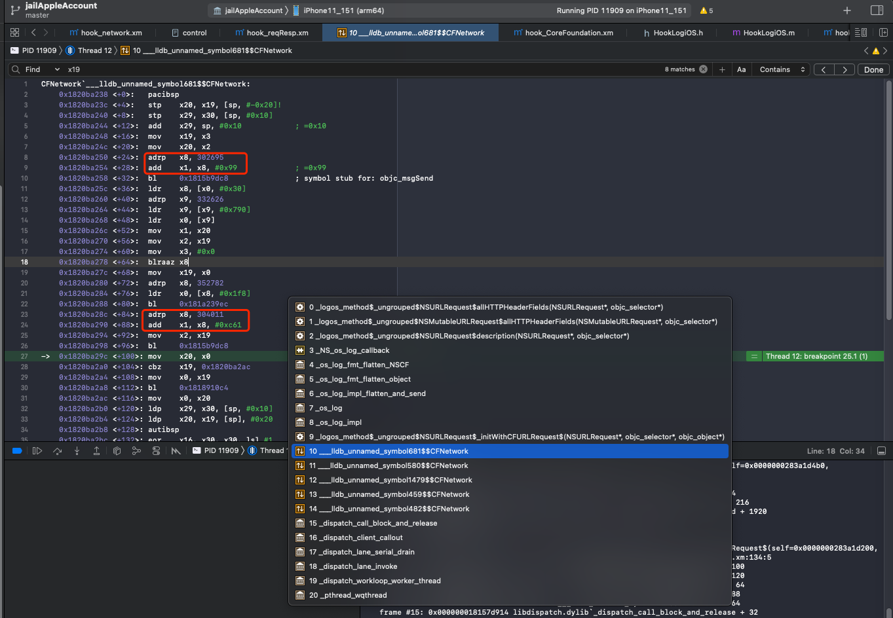

手动计算参数
此处，对于iOS逆向中，常见的：
内存中的字符串=objc_msgSend函数的第二个参数=SEL=selector=汇编中的x1寄存器
此处如果是adrp的话，可以用如下手动方式计算出来
即：
根据adrp，手动计算出当前的：
char* = 字符串 = objc_msgSend的SEL=函数名
举例说明：
对于：

0x1820ba250 <+24>: adrp x8, 302695
0x1820ba254 <+28>: add x1, x8, #0x99 ; =0x99
0x1820ba258 <+32>: bl 0x1815b9dc8 ; symbol stub for: objc_msgSend
...
0x1820ba28c <+84>: adrp x8, 304011
0x1820ba290 <+88>: add x1, x8, #0xc61 ; =0xc61
...
0x1820ba298 <+96>: bl 0x1815b9dc8 ; symbol stub for: objc_msgSend
其中的：
0x1820ba28c <+84>: adrp x8, 304011
-》
- 当前PC地址 = adrp指令所在地址 = 0x1820ba28c
- PC地址去4KB对齐 = PC低12位清零：
- 0x1820ba28c
- 低12位清零=16进制最低3位设置为0 -》 0x1820ba000
- 0x1820ba28c
- 立即数左移12位：
- 304011 = 0x4A38B
- 左移12位=16进制最低位加3个0 -》 0x4A38B000
- 304011 = 0x4A38B
- 两者相加 = PC被4KB对齐后的地址 + 立即数左移12位后的值
- 0x1820ba000 + 0x4A38B000
- = 0x1CC445000
- x8 = 0x1CC445000
0x1820ba290 <+88>: add x1, x8, #0xc61 ; =0xc61
-》
- x1
- = x8 + 0xc61
- = 0x1CC445000 + 0xc61
- = 0x1CC445C61
对应内存中的字符串的值：
(lldb) po (char*)0x1CC445C61
"_initWithCFURLRequest:"